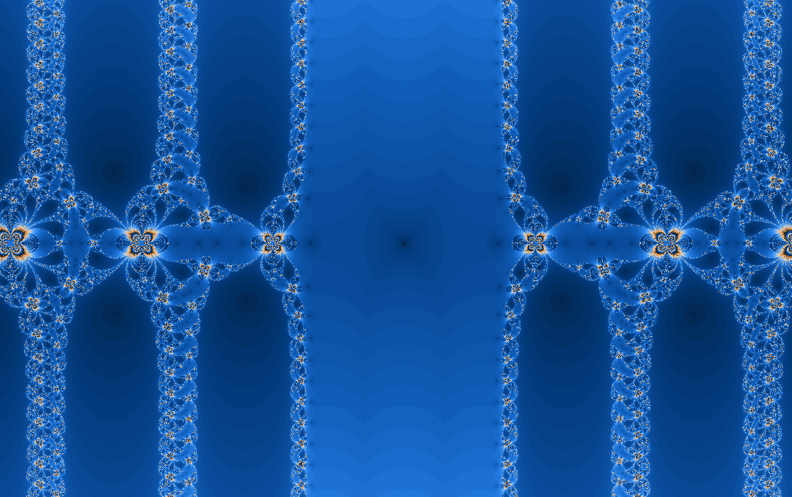

Fractal gallery
Newton \(\sin(z)-z=0\)
A deceptively simple equation with a broad complex basin landscape.
The equation \(\sin(z)=z\) sounds calm, but Newton iteration in the complex plane turns it into a wide field of repeated structures and sensitive borders.

What to try first
Use Min step in Fractal options to control when two successive Newton estimates count as converged.
Look for repeated bands and islands. The sine function's periodic nature remains visible after Newton correction.
Zoom into a boundary where the color changes quickly. That is where nearby guesses have different numerical stories.
Compare with the cosine and tangent Newton maps to see how related functions produce different basins.
Turn on the orbit display to see where each point converges
Mathematical notes
The sine Newton step
For \(f(z)=\sin(z)-z\), \(f'(z)=\cos(z)-1\). The map applies \(z_{n+1}=z_n-(\sin(z_n)-z_n)/(\cos(z_n)-1)\) and stops when the step becomes smaller than its tolerance.